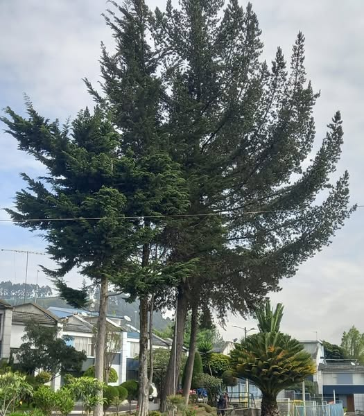

Los árboles son indispensables para el bienestar humano, nos ayudan a regular el clima, mejoran la calidad del aire y del agua, preservan los suelos de la erosión, nos brindan sombra, nos proporcionan espacios para la recreación, el descanso y el bienestar mental. La arbolada que defendemos es hogar de avifauna nativa, es frecuente ver a gavilanes, búhos, quindes, sinsontes y otras aves. En Quito, la Ordenanza de Protección del Arbolado promueve el cuidado de los árboles, la tala es la última opción; necesitamos subir el índice de masa verde en la ciudad; hagamos de Quito, una ciudad verde. 🌺🌺
